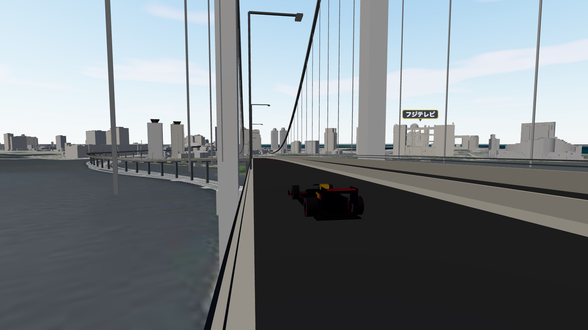
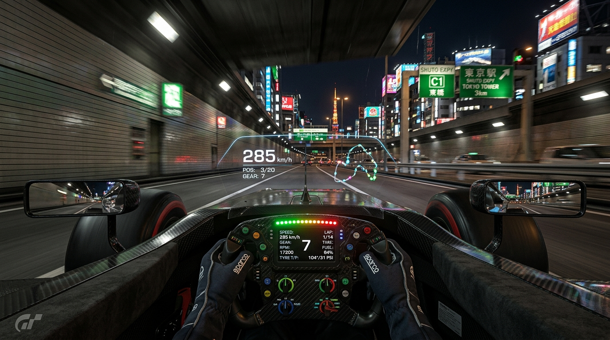
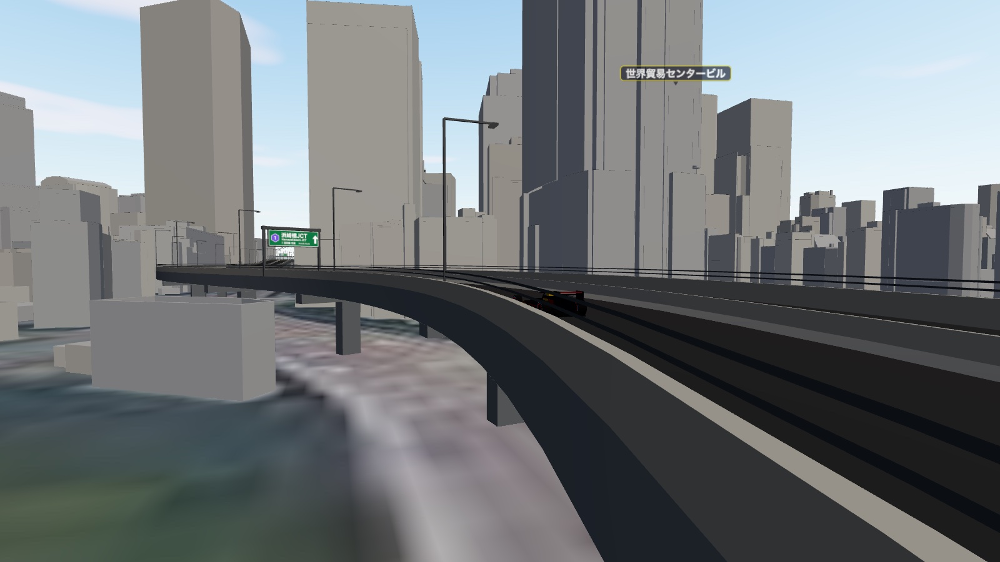
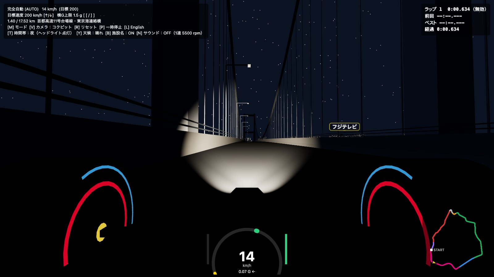
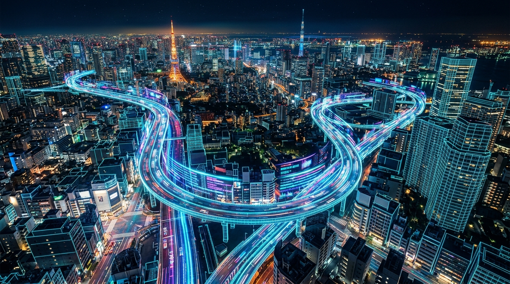
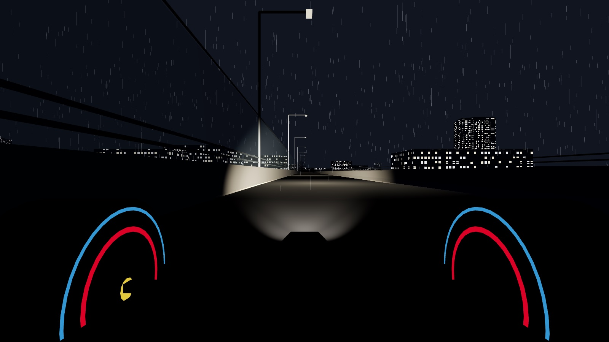

Project PLATEAUの3D都市モデル実データをベースに再現された首都高周回コース（約17.5km）。最先端の3DグラフィックスとMuJoCo物理エンジンによるリアルな走行で、東京のハイウェイを疾走するデスクトップ・シミュレーター（macOS / Windows）。

首都高フルループ周回
超高速フォーミュラ走行
完全自動・半自動・手動
買い切りデスクトップアプリ
高精細な3D都市モデル、緻密なコーナリング物理、昼夜・雨天のダイナミックな環境変化を余すところなく体験できます。
実測データから生成されたレインボーブリッジ、東京タワー、林立する高層ビル群、複雑な高架ジャンクションを圧倒的スケールで再現。沿道の有名施設には名前も表示。
安全な高速巡航をこなす完全自動（AUTO）、加速スリルを味わう半自動（SEMI）、腕が試される完全手動（MANUAL）をワンキーで切り替え。MuJoCo (WASM) 物理エンジンとABS・トラクションコントロールが限界領域の挙動を支えます。
昼・夕暮れ・夜のライティング遷移に加え、雨天時にはリアルな路面反射とウェットコンディション（グリップが65%に低下）をシミュレート。夜はヘッドライトが点灯。
後方追従、低重心なコックピット視点、コース全体を見渡す上空カメラ、マウスで自由自在に見回せるフリーカメラを搭載。
横Gメーター、カーブごとの推奨安全速度サジェスト、ミニマップ、セクター別ラップタイム計測などレーシング計器を完備。
Apple Silicon Mac / Windows 向けのネイティブデスクトップアプリ。3D都市モデルとMuJoCo物理エンジンを同梱し、インストール後はオフラインで動作します。
PLATEAUの建物名・計測高さから、沿道の約30の有名施設に名前を表示。フジテレビ、東京タワー、スカイツリーなどを目印に走れます。BキーでON/OFF。
夜になるとマシンのヘッドライトが自動で点灯し、前方の路面を照らします。暗い高架や橋の上でも、カーブの先まで見通せます。

地面すれすれの視点で味わうスピード感。画面下の速度計にアクセル・ブレーキ、横G、コーナーごとの安全速度の目印を表示し、安全速度を超えると警告します。左上にはギア・エンジン回転数・区間名も表示します。

首都高から見える周囲の建物のうち、フジテレビ、東京ビッグサイト、汐留の高層ビル群、東京タワー、東京スカイツリーなど約30の有名施設に名前を表示。名前と高さはProject PLATEAUの建物データ（建物名・計測高さ）から取得しています。

時間帯を「夜」にすると、マシンのヘッドライトが自動で点灯。暗い高架や橋の上でも、前方の路面とカーブの先を照らしながら走れます。
走行中いつでも「M」キーひとつで切り替え可能。景色を楽しみたい初心者からタイムアタックに挑む上級者まで。
AIが最適なレーシングラインと横Gリミッターに基づき、ステアリングと加減速を完全自動で制御。急なカーブの手前でも壁に接触しない安全な速度まで自動減速します。東京の街並みを眺めたい方に最適です。
| ステアリング | 完全自動（レーシングライン追従） |
| 速度コントロール | 完全自動（目標速度 50〜320 km/h 設定可能） |
| 操作キー | ↑ / ↓ 目標速度調整, [ / ] 横G上限調整 |
| おすすめ対象 | 景観を楽しみたい方、3D都市モデルを鑑賞したい方 |

ハンドル操作は自動ライン追従に任せ、アクセルとブレーキの操作をドライバー自身が担当。安全速度表示を見極めながら、コーナー手前でどこまで突っ込めるかのブレーキング勝負を楽しめます。
| ステアリング | 自動（完全自動と同じ理想ライン） |
| 速度コントロール | 手動（アクセル＆ブレーキ） |
| 操作キー | W / ↑ アクセル, S / ↓ ブレーキ |
| おすすめ対象 | 手軽にスピード感とスリルを味わいたい方 |
ステアリング、アクセル、ブレーキのすべてを自らの手でコントロール。速度に応じてハンドルの切れ角が最適化され、ABSとトラクションコントロールが限界領域でのマシン挙動を支えます。
| ステアリング | 手動（速度感応型ステアリングアシスト） |
| 速度コントロール | 手動（フルスロットル＆フルブレーキ） |
| 操作キー | A / D / ← / → ハンドル, W / S / ↑ / ↓ 加減速 |
| おすすめ対象 | 最速ラップレコード更新を目指すエキスパート |
芝浦JCTからレインボーブリッジを渡り、湾岸線、深川線、箱崎JCT、銀座の地下掘割を経て浜崎橋へと戻る名コース。
芝浦JCTのタイトな360度ループを上り、海面から約50mの高さに架かるレインボーブリッジへ。東京湾と夜景を一望できる爽快な絶景区間です。
時間帯や天候によって路面コンディションと景観が劇的に変化します。夜はヘッドライトが前方を照らし、雨天時はブレーキングと横G管理が勝敗を分けます。
雨天時はタイヤグリップが65%まで低下し、制動距離が大幅に伸びます。自動運転モードも安全のため自動で巡航速度を抑えます。
すべて実際のゲーム画面です（PLATEAUの建物・国土地理院の航空写真・OpenStreetMapの道路線形から生成）

Apple Silicon Mac と Windows に対応したネイティブデスクトップアプリ。一度の購入で永続的にご利用いただけます。
M1 / M2 / M3 / M4 チップに最適化された超軽量デスクトップ版。
Windows 10 / 11 対応スタンドアローンインストーラー。
操作方法やシステム要件についてのお問い合わせ